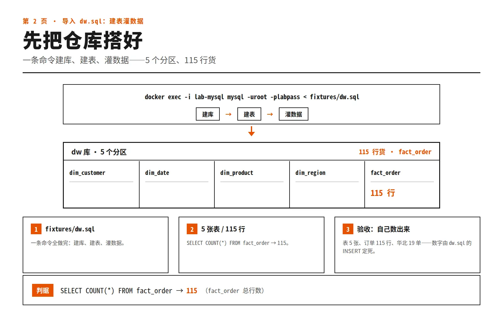
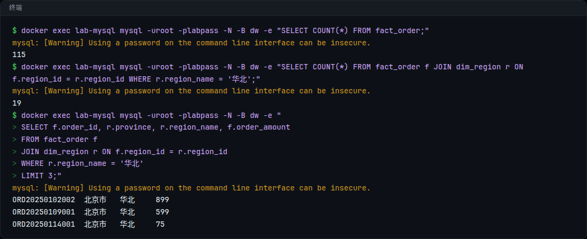

练本 · 阅读版（md 正典派生，改内容请改 manual/page-02.md）
第 2 页 · 导入 dw.sql：建表灌数据
城市坐标 · P2 仓库分区与入库通道（交付物 ③④）｜给仓库隔出 5 个分区、把 115 行货入库：从此问一句有货可取。
这一页构建什么
把 fixtures/dw.sql 导入第 1 页那个容器：一条命令把建库、建表、灌数据全做完（口语常说“灌数据”）。页末你自己用 SQL 数出表几张、订单几行、华北几单，才算验收。

猜一猜
先写下答案，再动手。
第 1 条命令把 dw.sql 里几百行 CREATE / INSERT 送进 MySQL。终端会逐条打印每张表、每行数据，还是什么都不打印？导入完再数一次：SELECT COUNT(*) FROM fact_order 会回几？（0 / 115 / 其他数字）
动手
第 1 页的 lab-mysql 要先创建好、正在运行；报 No such container: lab-mysql 就回第 1 页重跑。以下命令仍在仓库根目录执行（fixtures/dw.sql 在这里）。
第 1 条：导入 dw.sql。
docker exec -i lab-mysql mysql -uroot -plabpass < fixtures/dw.sql
-i 让容器的标准输入保持打开，< fixtures/dw.sql 是宿主机 shell 的重定向（第 1 页讲过）：文件内容从你的终端接进容器的 mysql，容器里的 mysql 把它当脚本逐句执行。少了 -i 会静默失败：mysql 读到空输入，不建表也不报错，退出码还是 0。
第 2 条：看库里的表。
docker exec lab-mysql mysql -uroot -plabpass -N -B dw -e "SHOW TABLES;"
dw 是库名；-N -B 让输出只留表名，方便逐行对。终端里照样会多一行密码 Warning，忽略它。
第 3 条：数行数、看华北订单。 一条命令里写三条 SQL，按顺序回三段结果。
docker exec lab-mysql mysql -uroot -plabpass -N -B dw -e "
SELECT COUNT(*) FROM fact_order;
SELECT COUNT(*) FROM fact_order f
JOIN dim_region r ON f.region_id = r.region_id
WHERE r.region_name = '华北';
SELECT f.order_id, r.province, r.region_name, f.order_amount
FROM fact_order f
JOIN dim_region r ON f.region_id = r.region_id
WHERE r.region_name = '华北'
LIMIT 3;"
fact_order 里只存了 region_id，没有“华北”这两个字，第二段 SQL 得 JOIN 到区域表才筛得出来；第三段只取前 3 单，下一段拿它和对账。
你应该看到
第 1 条除了那行密码 Warning，什么都不打印——CREATE / INSERT 不回显，一行业务输出都没有就是成功。
第 2 条回 5 行表名，按字母序：dim_customer、dim_date、dim_product、dim_region、fact_order。
第 3 条回 5 行：115 是 fact_order 总行数，19 是其中华北的单数，最后三行是华北的前 3 单（列之间是 Tab）：
115
19
ORD20250102002 北京市 华北 899
ORD20250109001 北京市 华北 599
ORD20250114001 北京市 华北 75

对账
- 猜“会逐条打印”：不对。
mysql批量读脚本时不回显执行过程；除密码Warning外一行输出都没有。所以“没输出”不是没执行，必须自己查表、数行数（第 2、3 条）才算验完。 - 猜 0：先看第 1 条是不是漏了
-i——那会“成功”退出但什么都没导入；如果文件路径写错，宿主机 shell 会直接报No such file or directory。 - 猜 115：对。这个数由
fixtures/dw.sql里fact_order的INSERT决定；115 行里华北（region_id为R004）19 单。 - 5 张表和
dw库不是 MySQL 送的：dw.sql开头CREATE DATABASE，后面 5 段CREATE TABLE；第 2 条列出的表名就来自这 5 段。 - 第 3 条最后三行能出现“华北”两个字，靠的是
JOIN dim_region r ON f.region_id = r.region_id：订单里只有编号R004，“华北”是从区域表连过去取到的。JOIN 条件写错，你会看到一行都没有。 - 最后三行只出 3 单，不是华北只有 3 单——
LIMIT 3只限制显示；华北一共 19 单，第二段 SQL 已经数过。
你现在拥有：一个装着 5 张表、115 单数据的
dw库；它是后面每次查询要落脚的数据底座。
自己改一下
- 去掉第 2 条里的
-N：第一行会多出什么？（参考：表头Tables_in_dw，下面还是 5 行表名。） - 把第 3 条第二个
'华北'换成'华南'：数会变成多少？再想想dim_region里“华南”对应哪个省。（参考：26 单；华南对应广东省（R001）。把这句的COUNT(*)换成SUM(f.order_amount)，华南销售额是70202。） - 再跑一遍第 1 条导入，再数一次第 3 条第一句：数会变吗？（参考：还是
115——每张表前的DROP TABLE IF EXISTS会先删旧表，不会翻倍。）